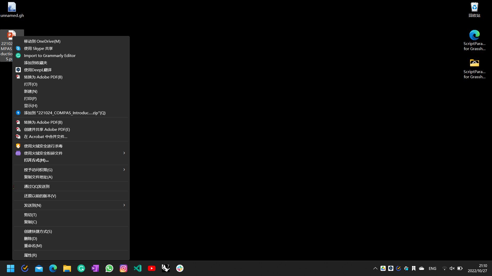

Windows Reinstallation Plan - 28th Oct
This note is for the first windows reinstallation of the laptop.
Content
- Reasons
- Before Reinstallation: File Backups
- After Reinstallation: System Settings
- After Reinstallation: Uninstall Useless Windows Softwares
- After Reinstallation: Basic Logins
- After Reinstallation: Applications Installation
- After Reinstallation: Set Windows start applications (开机启动的程序)
- After Reinstallation: Python Environment
- After Reinstallation: VSCode Settings
- After Reinstallation: new system backups
- After Reinstallation: Printer Settings
- Useful links
- Backup Captures
Reasons
- all the prompts (CMD, PowerShell, Anaconda Shell, Azure Cloud Shell) fails.
[已退出进程，代码为 4294967295 (0xffffffff)] [已退出进程，代码为 4294967295 (0xffffffff)] [已退出进程，代码为 2 (0x00000002)] - VSCode overload function fails

- VSCode ghC# Script Parasite cannot load since lack of .NET4.52. However, .NET4.52 cannot be installed since I have had later versions. The only way is to uninstall all the later versions then install .NET4.52.
- 'Code Smile' appears in my laptop. Code:
0x00000000something.

- File categorization is very important: from now on,
C:\is only for Windows and software applications,D:\is for static files.
Before Reinstallation: File Backups
- Backup all static files like
/Zac; /Photography; - Backup office license
- WIFI passwords
- PotPlayer Skin
- VSCode purchased plugins
- VSCode Markdown template
- VSCode settings (eg. paste image default location setting)
- Grasshopper plugins and templates
- Edge settings
- Download OneNote article and abandon OneNote. Every WeChat article comes to ArchZ website
- Figure out how to reinstall Snagit 13, Snagit Editor, Bandzip(no advertisement), Pot player, Snipaste
- Backup V2Ray-Core software
- Download all installation packages of all softwares needed
- Exit Windows Beta version
After Reinstallation: System Settings
- Decide default application location
- Initialize all settings (eg. 输入法设置)
- Turn off 小娜
- Windows theme
- Think about wifi/network settings
After Reinstallation: Uninstall Useless Windows Softwares
- OneNote
- OneDrive (Don't use it anymore, Google Drive will be used)
- McFee
- Windows 小组件
- Xbox series
- Windows 联系人
- 获取帮助
- 旧版 Windows 媒体播放器
- 入门
- 写字板
- Any other useless things: do a check
After Reinstallation: Basic Logins
- Check terminal (CMD)
- Microsoft Edge (Change settings)
After Reinstallation: Applications Installation
-
Office (Official) (Word, Excel, PowerPoint)
-
PowerShell
-
Chinese language package (only download for emergency, no use, Windows will be in English).
-
NVIDIA series:
- NVIDIA FrameView SDK 1.3.8 (Check necessities)
- NVIDIA GeForce Experience 3.26.0.154 (Check necessities)
- NVIDIA Control Panel (Check necessities)
- NVIDIA HD 音频驱动程序 1.3.39.14 (Check necessities)
- NVIDIA PhysX 系统软件 9.21 (Check necessities)
- NVIDIA USBC Driver 1.46 (Check necessities)
- NVIDIA 图形驱动程序 516.94 (Check necessities)
- INTEL CORP 因特尔显卡控制中心 (Check necessities)
-
.NET series:
- Microsoft ASP.NET Core 3.1.3 - Shared FrameView
- Microsoft Visual C++ 2005 Redistributable 8.0.61101
- Microsoft Visual C++ 2015-2022 Redistributable 14.32 x64
- Microsoft Visual C++ 2015-2022 Redistributable 14.32 x86
- .NET SDK 6.0.2
- .NET 4.8 targeting pack
- .NET 4.7.1 SDK
- .NET 4.7.1 targeting pack
- Microsoft Visual C++ 2008 Redistributable 9.0.3 x64
- Microsoft MPI (7.1.1) (Check necessities)
- Microsoft Visual C++ 2005 Redistributable 8.0.59192
- Microsoft Visual C++ 2005 Redistributable 8.0.56336
- Microsoft Visual C++ 2005 Redistributable 8.0.61000
- Microsoft Visual C++ 2005 Redistributable 9.0.30729
- Microsoft Visual C++ 2010 Redistributable 10.0.4021
- DirectX (Check necessities)
-
Lenovo series
- Lenovo Hotkeys
- Facebook Messenger
- Thunderbolt 控制中心 (INTEL CORP)
- Dolby Vision
- 联想驱动管理 2021.12.16.1101 (Check necessities)
- Dolby Atoms for Gaming
- Realtek Audio Console (Check necessities)
-
Adobe suites
- Acrobat DC
- Illustrator
- Photoshop
- Premiere
- Bridge
- InDesign
-
Custom applications
- Baidu NetDesk (change settings)
- Github Desktop
- Whats App
- Miro
- TickTick (滴答清单)
- Google drive
- VSCode (stable version)
- GIT (Check necessities)
- TIM (Change TIM default record location)
- Slack
- Facebook (Edge)
- Zoom
- PrusaSlicer 2.5.0
- City art search
- DeepL
- HiSuite
- instagram (Edge)
- YouTube (Edge)
- Grammarly
- Blender
- Snagit 13
- Snagit Editor
- Bandzip(no advertisement)
- Pot player
- Rhino 7 (setting it well after installation)
- Unity (2020.3.20f1c1) (2019.4.36f1c1)
- 火绒
- Teams
- Epic
- Autodesk DWG TrueView
- Touch Designer
- Google Chrome
- V2Ray
- Snipaste
- Wangyi Cloud Music
- Processing
- WeChat (Change WeChat default record location)
- WeMeet
- 有道词典
After Reinstallation: Set Windows start applications (开机启动的程序)
- Google Drive
- City art search
- DeepL
- V2Ray
- Snipaste
After Reinstallation: Python Environment
- Basics
pip install ur-rtde
pip install Rhino-stubs (Also change the 'stubs' file name)
- Compas
After Reinstallation: VSCode Settings
- Path check
"python.autoComplete.extraPaths": [
"C:\\Zac\\19 Github",
"C:\\Applications\\Rhino 7\\Plug-ins\\IronPython\\Lib",
"C:\\Users\\Zac\\AppData\\Roaming\\McNeel\\Rhinoceros\\7.0\\Plug-ins\\IronPython (814d908a-e25c-493d-97e9-ee3861957f49)\\settings\\lib",
"C:\\Users\\Zac\\AppData\\Roaming\\McNeel\\Rhinoceros\\7.0\\scripts"
],
"python.analysis.extraPaths": [
"C:\\Zac\\19 Github",
"C:\\Applications\\Rhino 7\\Plug-ins\\IronPython\\Lib",
"C:\\Users\\Zac\\AppData\\Roaming\\McNeel\\Rhinoceros\\7.0\\Plug-ins\\IronPython (814d908a-e25c-493d-97e9-ee3861957f49)\\settings\\lib",
"C:\\Users\\Zac\\AppData\\Roaming\\McNeel\\Rhinoceros\\7.0\\scripts"
],
- Path check of System variables
After Reinstallation: new system backups
- Backup the Windows registry (注册表)
- Create Windows system restore origin (系统还原原点)
After Reinstallation: Printer Settings
- Adobe print to PDF
- Microsoft print to PDF
Useful links
- 微软Windows https://www.microsoft.com/zh-cn/software-download/windows11
- 如何使用微软官方工具重装Windows系统？https://zhuanlan.zhihu.com/p/414089945?utm_id=0
- 联想驱动管理 https://newsupport.lenovo.com.cn/driveDownloads_index.html
- Windows 小工具 http://lx2021.ysepan.com/
- 新机教程 https://www.zhihu.com/question/46945957/answer/785903684
- 【新 机 攻 略】2020 拯救者新机上手设置和优化】 https://www.bilibili.com/video/BV1uv41117jw/?share_source=copy_web&vd_source=88d6c7daa68bf9e866db376930689e5a
Backup Captures

.png)
